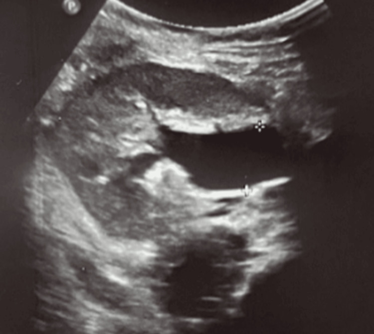
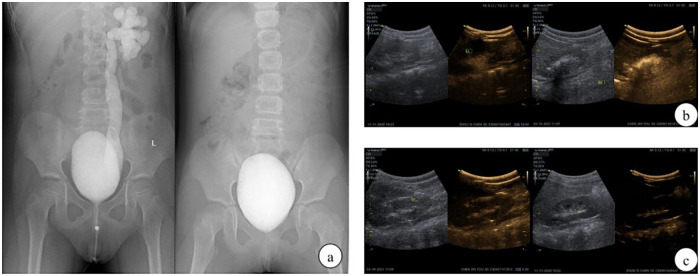
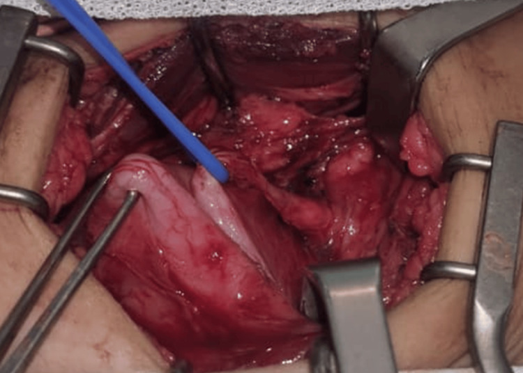
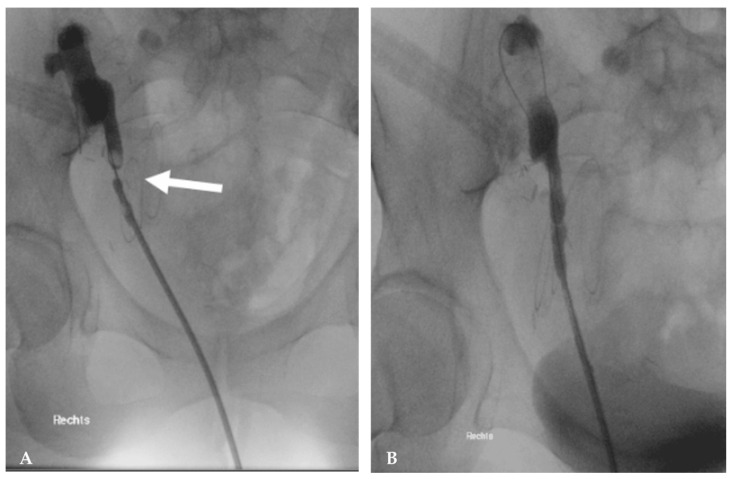

3010 — Hẹp miệng nối niệu quản–bàng quang sau cấy ghép lại niệu quản ở trẻ / Ureterovesical anastomotic stricture after ureteral reimplantation
Tags: pattern:hep-mien-noi pattern:u-nuoc-than pattern:thoat-nuoc-tieu vung:tiet-nieu vung:bang-quang vung:nieu-quan anatomy:UVJ protocol:MR-urography protocol:CT-urography protocol:Whitaker protocol:nong-bong score:Clavien-Dindo
Mức chắc chắn (certainty): tổng hợp y văn (literature synthesis) — ghép meta-analysis 9 nghiên cứu/655 trẻ Cohen vs Lich–Gregoir (Transl Pediatr 2026, PMC13559125), 179 trẻ nội soi bàng quang–khí PL vs Cohen (Front Pediatr 2026, PMC13433845), 65 nhũ nhi ≤ 36 tháng tắc đoạn cuối niệu quản bẩm sinh (POM) (J Clin Med 2026, PMC13513172), nghiệm pháp Whitaker sửa đổi 105 đơn vị thận sau cấy ghép lại niệu quản (Transl Androl Urol 2026, PMC13458501), tổng quan biến chứng phẫu thuật sau ghép thận nhi (J Clin Med 2026, PMC12842314), 107 trẻ ghép thận không đặt stent (Pediatr Transplant 2026, PMC13473721), 11 trẻ nong bóng nội soi POM (Medicina 2025, PMC11944046) và ca hẹp đoạn cuối niệu quản 1 cm ở trẻ 8 tuổi ghép thận (Cureus 2026, PMC13142765). Không có ca do nhóm tự chụp.
Câu hỏi thực hành: bé gái 8 tuổi, ghép thận 4 tháng, siêu âm định kỳ thấy ứ nước thận mức độ trung bình, creatinin tăng nhẹ; chụp niệu quản ngược dòng không kết luận được chỗ hẹp; không sốt, không đau. Câu hỏi: ứ nước này là tắc thật hay chỉ là "giãn tồn tại" sau mổ — và khi nào được nong bóng, khi nào phải mổ lại? Bài chốt ba quyết định: (1) ứ nước sau cấy ghép lại niệu quản KHÔNG đồng nghĩa tắc — phải chứng minh bằng động học/pressure–flow, không mổ theo siêu âm; (2) hẹp ngắn < 3 cm → nong bóng/laser nội soi; hẹp dài, tái phát hoặc thiếu máu → mổ lại; (3) hẹp sớm < 3 tháng thường do kỹ thuật/thiếu máu, hẹp muộn ≥ 6 tháng thường do xơ/nhiễm/thải ghép — cơ chế quyết định cách sửa. Nối 635 – Dị tật hệ tiết niệu nhi, 642 – Biến chứng muộn sau chấn thương đường tiết niệu dưới, 189 – Đánh giá tiết niệu trước ghép thận, 691 – Sỏi bàng quang ở trẻ bàng quang thần kinh, 3009 – Dò sau tăng dung tích bàng quang.
1. Tổng quan bệnh học – cơ chế hình ảnh: vì sao "giãn" không bằng "tắc"
- Định nghĩa: hẹp miệng nối niệu quản–bàng quang (ureterovesical anastomotic stricture) là hẹp lòng tại chỗ niệu quản được cấy lại vào bàng quang, gây chênh áp lực thận–bàng quang và ứ nước tiến triển, khác với giãn không tắc (dilated but unobstructed) — nơi lòng niệu quản rộng nhưng không có gradient áp lực và chức năng thận ổn định. Phân biệt hai thực thể này là toàn bộ nội dung bài.
- Tần suất thật: trong 179 trẻ nội soi bàng quang–khí, tắc miệng nối 1/179 (0,6%), ứ nước 2/179, thoát nước tiểu 7/179 (PMC13433845). Trong 65 nhũ nhi mổ vì POM, không ca nào tắc lại sau 40,0 ± 17,4 và 46,5 ± 21,1 tháng (PMC13513172). Meta-analysis 9 nghiên cứu/655 trẻ cho thấy tắc/ứ nước OR 1,15 (KTC 95% 0,34–3,83) giữa Cohen và Lich–Gregoir — tức biến cố hiếm và tương đương (PMC13559125). Ghép thận là bối cảnh nặng hơn: hẹp niệu quản tới 5% ở trẻ ghép thận (PMC12842314); loạt 107 trẻ ghép không stent có 3,7% (4/107) biến chứng niệu, 2,8% (3/107) phải mổ, hẹp/tắc 2,8% (2 chỗ nối bể–niệu quản, 1 do sỏi bít), rò 0% (PMC13473721).
- TẠI SAO miệng nối lại hẹp: niệu quản đoạn cuối nuôi bởi đám rối mạch mạc treo niệu quản; bóc tách, tạo hình thu nhỏ (tapering), hoặc kéo căng khi chuyển đường đi đều làm giảm tưới máu mép khâu → loét → xơ → hẹp. Theo định luật Poiseuille, sức cản tỉ lệ nghịch với bán kính mũi 4 (R ∝ 1/r⁴): lòng giảm từ 3 mm còn 1,5 mm làm sức cản tăng ~16 lần — nên hẹp 1–2 mm đã đủ gây ứ nước và tăng creatinin.
- TẠI SAO ứ nước KHÔNG chứng minh tắc: bể thận–niệu quản là hệ đàn hồi, "giãn" là hiện tượng thể tích, không phải áp lực. Sau cấy ghép lại, miệng nối không còn cơ chế van, niệu quản có thể giãn tồn tại hàng tháng dù không tắc; ngược lại, hẹp mới hình thành có thể chưa làm giãn bể thận nếu bể thận xơ, không đàn hồi. Vì vậy phải dùng động học (diuretic renography) hoặc đo áp lực trực tiếp (Whitaker).
- Ngưỡng áp lực của Whitaker sửa đổi (số liệu 105 đơn vị thận sau cấy ghép lại): Type I — chênh áp bể thận–bàng quang ổn định ở mức nền, áp lực tuyệt đối < 22 cmH₂O**, niệu quản hiện rõ khi bơm; **Type II** — chênh áp **tăng dần trong lúc bơm nhưng nhu động còn**, cuối nghiệm pháp **chênh ≤ 15 cmH₂O** và **áp lực tuyệt đối ≤ 22 cmH₂O**; **Type III** — chênh áp **luôn > 15 cmH₂O kèm nhu động yếu/mất → tắc. Tỷ lệ Type I 69,52% · Type II 22,86% · Type III 7,62%; áp lực bể thận trung vị 20,00 (16,00–25,50) cmH₂O, bàng quang 14,00 (9,50–20,00), chênh 5,00 (2,00–9,00); giá trị tiên đoán âm 85,71–91,43% (PMC13458501).
- TẠI SAO "hẹp < 3 cm" là ngưỡng nội soi: đoạn hẹp ngắn cho phép nong bóng/laser cắt hẹp mà vẫn giữ được chiều dài niệu quản và nguồn máu; hẹp dài hơn thì nội soi thất bại cao vì mô xơ tái tạo, phải tái tạo niệu quản (nối lại, psoas hitch, Boari). Ở trẻ ghép thận, tổng quan nêu rõ < 3 cm → nội soi; > 3 cm → phẫu thuật tái tạo (PMC12842314).
- TẠI SAO phải phân biệt hẹp sớm và muộn: < 3 tháng hẹp do kỹ thuật/thiếu máu (phù nề, khâu căng, xoắn) — có thể tự cải thiện hoặc đáp ứng nong; ≥ 6 tháng hẹp do xơ hóa, nhiễm trùng, bệnh mạch tiến triển, thải ghép (PMC12842314); nguyên nhân quyết định có nên chờ, nong hay mổ.
2. Mẫu hình + chẩn đoán phân biệt theo thời điểm và cơ chế (Gamut)
- Theo thời điểm:
- Sớm ≤ 4 tuần: phù nề miệng nối, cục máu đông, xoắn/gập niệu quản, rò nước tiểu, ứ nước do bàng quang còn yếu/tăng áp.
- Trung gian 1–6 tháng: hẹp do thiếu máu – xơ, sỏi hình thành trên stent, chèn ép bởi lymphocele/urinoma.
- Muộn > 6 tháng: hẹp xơ trưởng thành, hẹp do BK virus, thải ghép mạn, hẹp do trào ngược – nhiễm trùng lặp lại.
- Theo cơ chế:
- Nội tại: thiếu máu mép khâu, hẹp do khâu quá chặt, tunnel quá hẹp ở Lich–Gregoir, tapering làm lòng nhỏ.
- Ngoại lai: gập/góc khi chuyển đường (Cohen xuyên tam giác), chèn ép bởi mạch, lymphocele, hematoma, dính sau mổ.
- Trong lòng: sỏi, cục máu, mảnh mô hoại tử.
- Toàn thân/bệnh nền: BK nephropathy, thải ghép, thiếu máu nuôi do xơ vữa mạch ghép.
- Theo vị trí hẹp (quyết định kỹ thuật):
- Tại miệng nối (UVJ): hay sau cấy ghép lại; nong bóng hoặc tái cấy ghép.
- Ngay trên miệng nối 1–2 cm: hay sau tapering; cần cắt đoạn hẹp + nối lại.
- Đoạn giữa/dài: thường do xơ sau xạ/chấn thương; cần tái tạo dài (Boari, psoas hitch, thay niệu quản).
- Mnemonic "STRICTURE": Stent (sỏi trên stent), Tension/xoắn, Radiation/xơ, Ischaemia (thiếu máu), Cohen re-route (gập), Tapering (lòng nhỏ), Urinary leak (xơ sau rò), Rejection/BK, Extrinsic (lymphocele, hematoma).
3. Bảng so sánh phân biệt (ma trận đối chiếu)
| Thực thể (entity) | Hình ảnh điển hình | Chốt vào (rule-in) | Chốt loại (rule-out) | Gợi ý xác nhận |
|---|---|---|---|---|
| Hẹp miệng nối (anastomotic stricture) | Siêu âm: ứ nước tăng dần theo lần chụp; CT/MR urography: chỗ hẹp khu trú, thành dày, niệu quản trên giãn; chụp ngược dòng thấy cản quang không qua được | Chỗ hẹp + gradient áp lực > 15 cmH₂O (Whitaker type III) + chức năng thận giảm/xấu đi theo thời gian | Ứ nước ổn định nhiều lần, creatinin ổn, không gradient → giãn không tắc | Siêu âm lặp + diuretic renography; Whitaker sửa đổi; CT/MR urography |
| Giãn không tắc (dilated but unobstructed) | Bể thận/niệu quản rộng nhưng không tăng thêm, vỏ thận dày bình thường, không chỗ hẹp rõ | Kích thước ổn định ≥ 6 tháng + độ lọc/tưới máu ổn + không gradient | Tăng dần + chỗ hẹp + chức năng giảm → hẹp thật | Diuretic renography 2 lần; Whitaker nếu còn nghi |
| Gập/xoắn niệu quản (kinking) | Niệu quản góc nhọn, chữ S ngay trên miệng nối; CT vành/đứng thấy rõ | Góc gập tại chỗ chuyển đường + ứ nước ngay sau mổ | Chỗ hẹp nhẵn, đối xứng, không gập → hẹp xơ | CT urography đa bình diện; soi + chụp ngược dòng |
| Sỏi niệu quản trên stent | Cản quang trong lòng ± bóng lưng trên siêu âm; thường ở đầu stent | Sỏi thấy rõ + đau quặn/thoát nước tiểu | Không cản quang, chỉ hẹp lòng → hẹp miệng nối | CT KUB liều thấp; soi lấy sỏi |
| Cục máu đông | Khối không cản quang trong lòng, thay đổi giữa 2 lần chụp | Sau mổ/thủ thuật + đái máu + khối di động | Khối cố định, ngấm thuốc → u/mô | Siêu âm lặp; bơm rửa; soi |
| Chèn ép ngoài (lymphocele, hematoma, urinoma) | Khối dịch quanh thận/niệu quản đẩy lệch niệu quản; không có tổn thương lòng | Khối dịch + niệu quản bị đẩy + hẹp do chèn | Hẹp trong lòng tại miệng nối → hẹp thật | CT/MR; siêu âm Doppler; dẫn lưu khối dịch |
| Rò nước tiểu/hoại tử niệu quản | Thoát cản quang ngoài lòng, dịch quanh thận, có thể thiếu đoạn niệu quản | Thoát cản quang + sốt/đau + tăng creatinin dịch ổ bụng | Không thoát cản quang → không rò | CT urography muộn/CT cystography; chụp ngược dòng |
| Trào ngược tái phát (VUR) | Cản quang đi ngược lên khi bơm bàng quang; niệu quản giãn theo thì bơm, hết khi thôi bơm | Trào ngược thấy rõ trên VCUG/ceVUS | Không trào ngược, nhưng ứ nước khi bàng quang rỗng → tắc | VCUG/ceVUS; đo dung tích và áp lực bàng quang |
| Bí tiểu/tăng áp bàng quang (sau Lich–Gregoir) | Hai bên ứ nước, bàng quang căng, thành dày; hết sau khi thông tiểu | Bàng quang căng + ứ nước hai bên + giảm sau thông tiểu | Ứ nước một bên, bàng quang rỗng → hẹp miệng nối | Đo thể tích tồn lưu; bàng quang đồ; thông tiểu |
| Thải ghép/BK (không tắc) | Thận to, phù, tăng tín hiệu T2; không có chỗ hẹp; DWI hạn chế khuếch tán không đặc hiệu | Sinh thiết/thải ghép + BK viremia + không gradient | Có chỗ hẹp + gradient → tắc | Sinh thiết ghép, BK PCR, siêu âm Doppler |

Bé gái 8 tuổi, ghép thận; siêu âm 4 tháng sau ghép: ứ nước 1,9 cm (thước đo) nhưng không thấy niệu quản giãn rõ — đây chính là cạm bẫy "ứ nước không tương xứng với mức giãn". Chẩn đoán cuối cùng là hẹp đoạn ngắn ~1 cm cách chỗ cắm vào bàng quang, phải mổ mới xác định. Nguồn: Cureus 2026 (PMC13142765), CC BY 4.0, nguyên bản.
(a) VCUG trước mổ: trào ngược độ IV–V bên trái với niệu quản giãn, ngoằn ngoèo; (a, phải) VCUG 6 tháng sau cấy ghép lại: không còn trào ngược, nhưng niệu quản vẫn còn giãn nhẹ — minh họa rằng hết trào ngược không đồng nghĩa hết giãn. (b, c) ceVUS trước và sau mổ. Nguồn: Front Pediatr 2026 (PMC13433845), CC BY 4.0, nguyên bản.Ba câu hỏi trước khi gọi là "hẹp"
- Có chỗ hẹp thật không? (CT/MR urography hoặc chụp ngược dòng — không chỉ siêu âm).
- Có gradient áp lực không? (diuretic renography; Whitaker nếu còn nghi).
- Chức năng thận có xấu đi theo thời gian không? (creatinin/eGFR, độ lọc trên renography, độ dày vỏ).
4. Protocol chẩn đoán – theo dõi – can thiệp
- Theo dõi sau cấy ghép lại (không ghép thận): siêu âm 1 tháng, 3 tháng, 6 tháng, sau đó mỗi 6–12 tháng; chụp bàng quang–niệu quản ngược dòng chỉ khi có chỉ định (nhiễm trùng tiểu sốt, ứ nước tăng). Trong loạt 179 trẻ, siêu âm + VCUG/ceVUS là đủ để phát hiện 1 ca tắc miệng nối và 7 ca thoát nước tiểu (PMC13433845).
- Bước 1 — siêu âm có đo lường: đo đường kính bể thận trước–sau (APD), độ dày nhu mô, đường kính niệu quản, thể tích tồn lưu; so với lần trước. Trong 65 nhũ nhi, APD giảm từ 22,1 → 9,0 mm (TPL) và 21,2 → 10,0 mm (LLG) sau mổ — tức là APD giảm là dấu hiệu thành công, không phải "hết giãn hoàn toàn" (PMC13513172).
- Bước 2 — đánh giá chức năng/động học: diuretic renography (MAG3/DTPA) khi ứ nước kéo dài; ghi độ lọc tương đối (DRF), thời gian bán thải, đáp ứng lợi tiểu. DRF trong loạt POM 38,0 → 40,3% và 38,8 → 40,9% — DRF được bảo tồn là mục tiêu (PMC13513172).
- Bước 3 — khi hình ảnh không kết luận: nghiệm pháp Whitaker sửa đổi (đo áp lực bể thận–bàng quang khi bơm dung dịch tốc độ tăng dần, kèm hình ảnh); Type III (> 15 cmH₂O + nhu động yếu/mất) = tắc, Type I/II = không tắc. Đây là công cụ loại trừ tắc tốt nhất (giá trị tiên đoán âm 85,71–91,43%) và giúp quyết định rút ống thông niệu quản qua da (PMC13458501).
- Bước 4 — can thiệp theo độ dài và cơ chế:
| Tình huống | Lựa chọn | Số liệu / lưu ý |
|---|---|---|
| Hẹp sớm < 4 tuần, chỉ phù nề | Chờ + theo dõi 4–6 tuần, điều trị nhiễm trùng, đảm bảo dẫn lưu | Đừng can thiệp vào "hẹp" mới hình thành trong 2 tuần đầu |
| Hẹp ngắn < 3 cm tại miệng nối | Nong bóng ± stent hoặc laser cắt hẹp (endoureterotomy) + stent | Ngưỡng < 3 cm → nội soi; > 3 cm → tái tạo (PMC12842314) |
| Hẹp sau nong tái phát / hẹp dài | Tái cấy ghép lại niệu quản (trong/ngoài bàng quang); psoas hitch/Boari nếu thiếu chiều dài | Ở trẻ ghép thận, hẹp/tắc 2,8% và 2/3 ca phải mổ trong loạt không stent (PMC13473721) |
| Hẹp do thiếu máu, hoại tử đoạn dài | Cắt đoạn + nối lại hoặc thay niệu quản (ileal ureter) | Ca Whitaker type III gradient 28 cmH₂O + nhu động mất do xạ trị → thay niệu quản bằng hồi tràng (PMC13458501) |
| Hẹp kèm sỏi | Lấy sỏi + nong/sửa miệng nối | Sỏi là nguyên nhân 1/3 ca tắc trong loạt ghép không stent (PMC13473721) |
| Hẹp + bàng quang áp lực cao | Điều trị bàng quang trước (CIC, kháng cholinergic, tăng dung tích) rồi đánh giá lại | Bí tiểu sau Lich–Gregoir 6,4% vs 1,7% (Cohen) — OR 0,32 (PMC13559125) |
| Nong bóng ở trẻ nhỏ | Hiệu quả ~83% nhưng biến chứng 73% (C–D IIIb 50%: vỡ bóng, di trú stent, hẹp lại) | 11 trẻ POM, nong bóng + stent (PMC11944046) — chọn bệnh nhân kỹ |
- Bước 5 — theo dõi sau can thiệp: siêu âm 1, 3, 6 tháng; rút stent 4–6 tuần; chụp kiểm tra nếu ứ nước không giảm; đo creatinin/eGFR mỗi lần. Sau nong bóng thất bại 2 lần → chuyển mổ tái tạo, không nong lần 3.
flowchart TD
A[U nuoc than sau cay ghep lai nieu quan] --> B[Sie u am: APD, nhu mo, nieu quan, ton luu]
B --> C{U nuoc tang dan hoac chuc nang xau?}
C -->|Khong| D[Theo doi 3-6 thang: u nuoc on dinh = gian khong tac]
C -->|Co| E[Diuretic renography: DRF + dong hoc]
E --> F{Con nghi tac?}
F -->|Khong| D
F -->|Co| G[CT/MR urography: vi tri va CHIEU DAI hep]
G --> H{Chieu dai hep}
H -->|duoi 3 cm| I[Nong bong + stent hoac laser cat hep]
H -->|tu 3 cm tro len| J[Tai tao: cay ghep lai / psoas hitch / Boari / thay nieu quan]
I --> K{Con u nuoc sau 4-6 tuan?}
K -->|Khong| L[Theo doi 6-12 thang]
K -->|Co| M[Whitaker sua doi]
M --> N{Gradient tren 15 cmH2O va nhu dong yeu?}
N -->|Co| J
N -->|Khong| L
5. Biến thể bình thường và cạm bẫy
- Bẫy 1 — mổ theo siêu âm: ứ nước tồn tại hàng tháng sau cấy ghép lại là bình thường; trong loạt 65 nhũ nhi, APD sau mổ vẫn còn 9–10 mm dù không ca nào tắc lại (PMC13513172). Chỉ can thiệp khi ứ nước tăng dần + chức năng giảm + có chỗ hẹp.
- Bẫy 2 — "hẹp" trong 2 tuần đầu: phù nề miệng nối sau mổ tự giảm; chụp ngay trong 2 tuần dễ đọc quá thành hẹp. Chờ 4–6 tuần trước khi kết luận (trừ khi có rò, sốt, vô niệu).
- Bẫy 3 — Cohen làm khó đường ngược dòng: cấy ghép xuyên tam giác làm lỗ niệu quản lệch vị trí, đặt catheter ngược dòng khó; nếu không lên được, dùng đường qua da (nephrostomy) + chụp ngược dòng thay vì kết luận "không tắc".
- Bẫy 4 — tapering tạo hình giả hẹp: đoạn niệu quản được thu nhỏ có lòng hẹp hơn bình thường nhưng không tắc; đọc trên CT dễ nhầm. Đối chiếu hình dạng đều, nhẵn, không gradient.
- Bẫy 5 — bàng quang căng giả tắc: bí tiểu sau Lich–Gregoir (6,4%) gây ứ nước hai bên và tăng creatinin; thông tiểu/đặt CIC thì hết. Luôn kiểm tra thể tích tồn lưu trước khi kết luận hẹp.
- Bẫy 6 — stent che hẹp: stent mở lòng nên hình ảnh có thể bình thường dù hẹp đang hình thành; đánh giá lại sau rút stent.
- Bẫy 7 — nephrostomy làm mất dấu hiệu: ống thông qua da giải áp → bể thận xẹp, hẹp không lộ; phải kẹp ống/chụp có áp lực mới thấy.
- Bẫy 8 — quy mọi suy ghép cho tắc: creatinin tăng sau ghép thận có thể do thải ghép, BK nephropathy, độc calcineurin, hẹp động mạch ghép; không có chỗ hẹp + không gradient thì không mổ.
6. Tự lượng giá — Blind Quiz
Ca 1 — Bé gái 8 tuổi, ghép thận 4 tháng, ứ nước 1,9 cm, creatinin tăng nhẹ, chụp ngược dòng không kết luận.
- Câu hỏi 1: Vì sao ứ nước 1,9 cm mà không thấy niệu quản giãn lại là dấu hiệu đáng lo, không phải dấu hiệu yên tâm?
- Câu hỏi 2: Bước tiếp theo hợp lý là gì, và chẩn đoán cuối cùng là gì?
Bấm để hiện đáp án (findings + chẩn đoán)
- Dấu hiệu: ứ nước 1,9 cm đo bằng thước trên siêu âm, niệu quản không giãn rõ; chụp ngược dòng không xác định được chỗ hẹp.
- Vì sao đáng lo: ứ nước tăng dần + creatinin tăng dù không thấy giãn niệu quản gợi ý hẹp đoạn ngắn sát chỗ cắm — cản quang không vào được đoạn trên nên không thấy giãn; đây là kiểu "hẹp kín" dễ bị bỏ.
- Diễn biến: mổ thăm dò phát hiện hẹp đoạn ngắn ~1 cm cách chỗ cắm vào bàng quang (ảnh dưới); xử trí tái cấy ghép lại niệu quản + stent JJ, sau đó chức năng ghép ổn định.

Trong mổ: hẹp đoạn ngắn của niệu quản ngay sát chỗ cắm vào bàng quang (đoạn niệu quản mảnh, xơ); trên là niệu quản giãn. Đây là lý do chụp ngược dòng không thấy hẹp: đầu catheter không vượt qua được chỗ hẹp để bơm đoạn trên. Nguồn: Cureus 2026 (PMC13142765), CC BY 4.0.- Bài học: không kết luận "không tắc" chỉ vì chụp ngược dòng không thấy chỗ hẹp; khi lâm sàng và chức năng xấu đi, cần CT/MR urography hoặc Whitaker, và mổ thăm dò là lựa chọn hợp lý.
- Nguồn ảnh: Cureus 2026 (PMC13142765), CC BY 4.0.
Ca 2 — Trẻ trào ngược độ IV–V một bên, được cấy ghép lại niệu quản; so sánh VCUG trước và sau mổ.
- Câu hỏi: (a) Hai điểm khác nhau giữa hai phim? (b) Niệu quản còn giãn nhẹ sau mổ có phải là hẹp không?
Bấm để hiện đáp án
- Khác biệt: trước mổ trào ngược độ IV–V với niệu quản giãn, ngoằn ngoèo; sau mổ không còn trào ngược, bể thận nhỏ lại, nhưng niệu quản vẫn còn giãn nhẹ.
- Còn giãn không phải hẹp: đây là giãn tồn tại do thành niệu quản mất trương lực sau thời gian dài trào ngược; trong loạt 179 trẻ, chỉ 1 ca tắc miệng nối (0,6%) và 2 ca ứ nước, tức giãn đơn thuần là phổ biến hơn tắc (PMC13433845).
- Xác nhận: siêu âm lặp ổn định, DRF không giảm, không có chỗ hẹp trên CT/MR urography.
- Nguồn ảnh: Front Pediatr 2026 (PMC13433845), CC BY 4.0.
Ca 3 — Hẹp niệu quản đoạn chậu sau mổ; chụp ngược dòng qua da trước và sau nong bóng.

- Câu hỏi: (A) Dấu hiệu nào xác định chỗ hẹp? (B) Vì sao nong bóng được chọn ở ca này, và tiêu chí nào khiến phải chuyển mổ?
Bấm để hiện đáp án
- (A) Cột cản quang hẹp không đều tại một điểm (mũi tên), niệu quản trên giãn; (B) sau nong, cản quang qua được và lòng rộng hơn.
- Chọn nong: hẹp ngắn (< 3 cm), một ổ, không thiếu máu/hoại tử — ngưỡng < 3 cm nội soi, > 3 cm tái tạo (PMC12842314).
- Chuyển mổ khi: hẹp > 3 cm, tái phát sau 2 lần nong, có thiếu đoạn/hoại tử, hoặc nhu động mất + gradient cao (Whitaker type III) — ca xạ trị gradient 28 cmH₂O phải thay niệu quản bằng hồi tràng (PMC13458501).
- Lưu ý ở trẻ: nong bóng thành công ~83% nhưng biến chứng tới 73%, nửa là Clavien–Dindo IIIb (vỡ bóng, di trú stent, hẹp lại) — cần chọn bệnh nhân và theo dõi sát (PMC11944046).
- Nguồn ảnh: J Clin Med 2026 (PMC12842314), CC BY 4.0 (hình được bài tổng quan dùng lại từ nguồn CC BY 4.0, có ghi công trong bài gốc).
Bài liên quan chéo
- 635 – Dị tật hệ tiết niệu nhi: ứ nước SFU, trào ngược VUR, van niệu đạo sau
- 642 – Biến chứng muộn sau chấn thương đường tiết niệu dưới ở trẻ (hẹp niệu đạo sau chấn thương)
- 189 – Đánh giá tiết niệu trước ghép thận ở bàng quang thần kinh/tái tạo
- 691 – Sỏi bàng quang & sỏi quanh catheter ở trẻ bàng quang thần kinh (sỏi bít miệng nối)
- 3009 – Dò bàng quang–ruột và dò bàng quang–da sau tăng dung tích bàng quang (rò nước tiểu sau mổ)
- 582 – Biến chứng tiêu hóa–niệu sau xạ trị phụ khoa (hẹp niệu quản sau xạ, tạo hình niệu quản)
Không dùng để chẩn đoán độc lập khi chưa có người hướng dẫn.